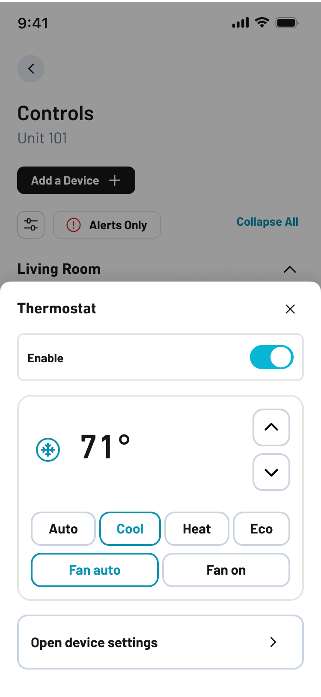
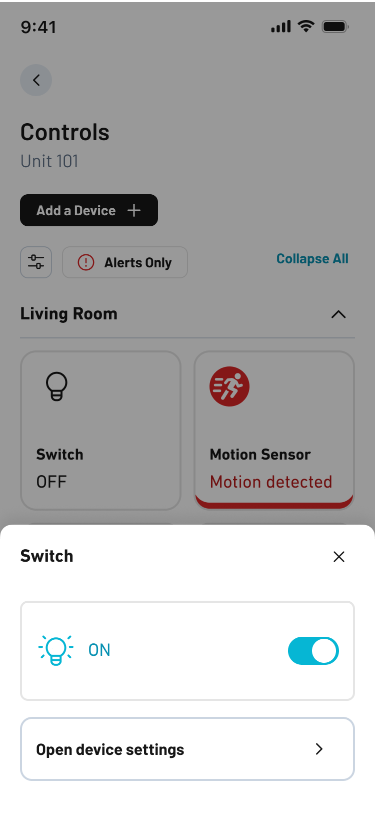
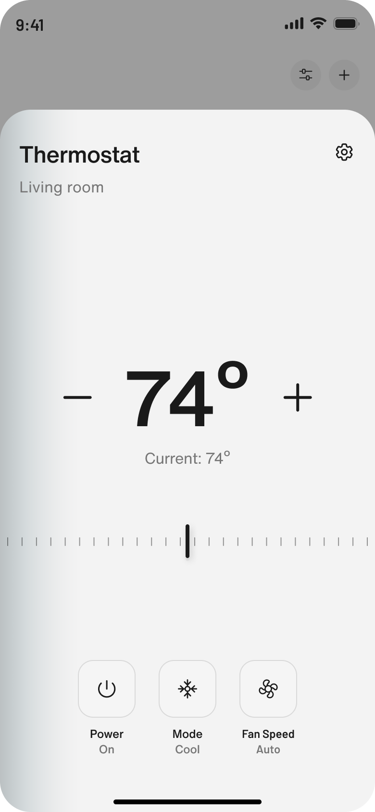
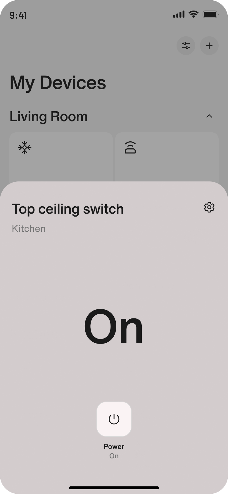
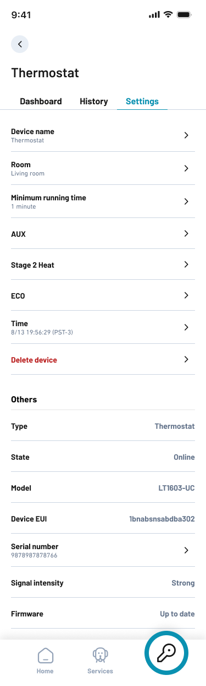
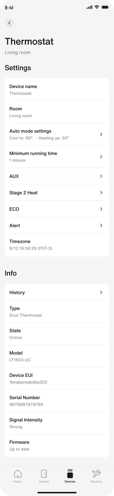
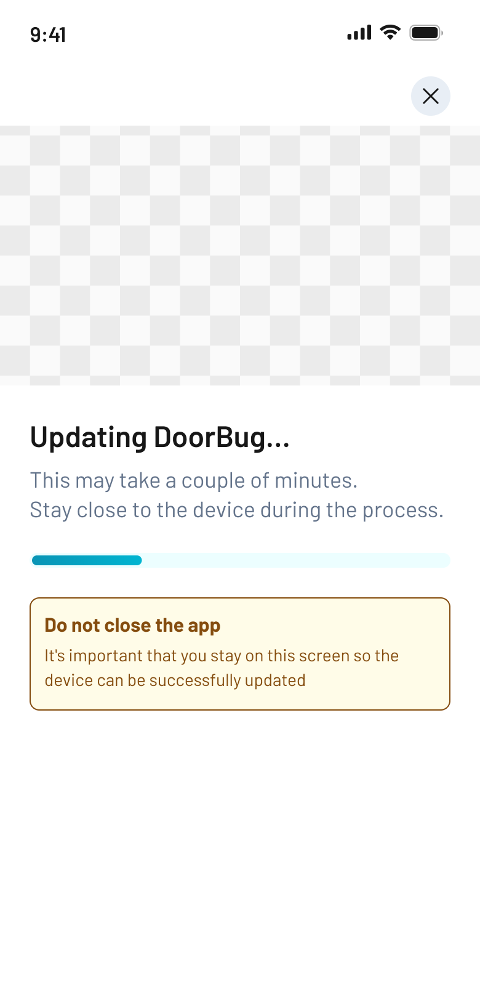
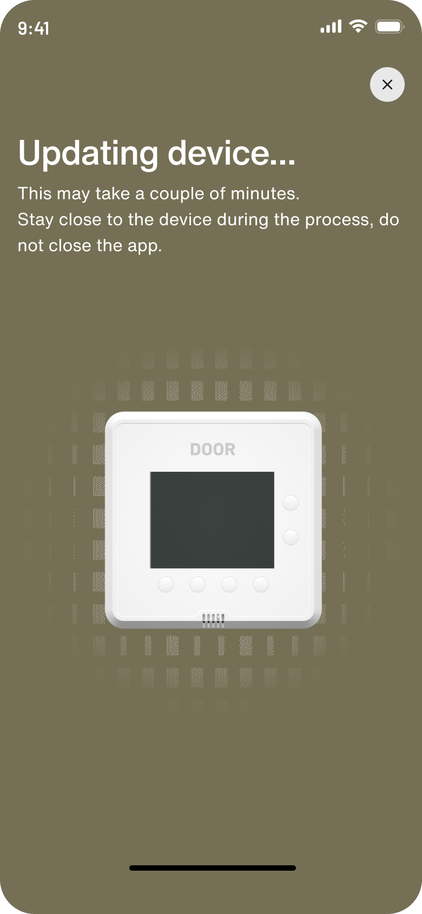
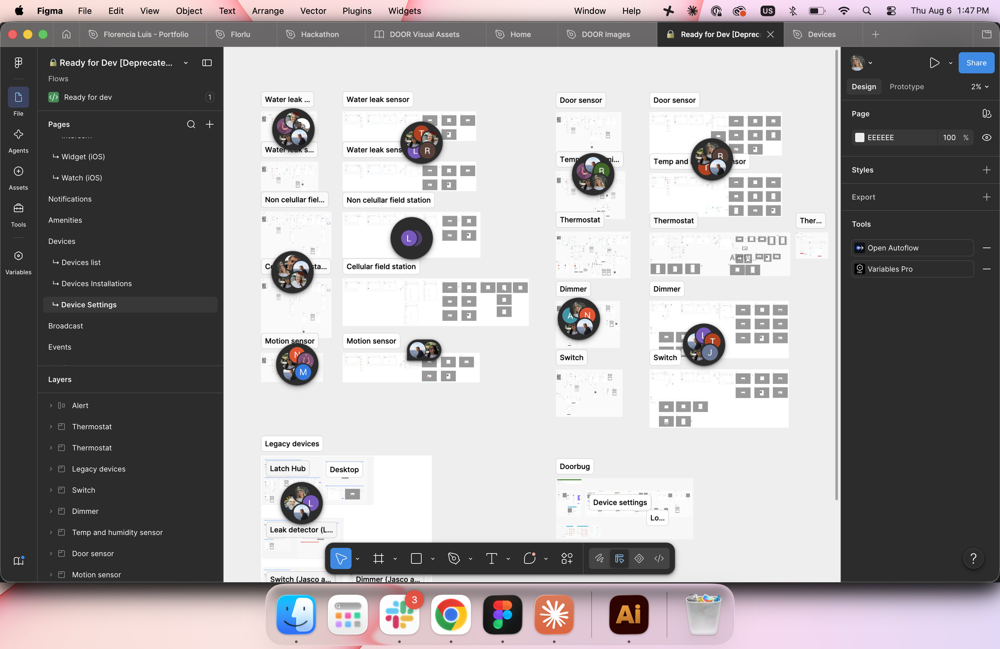
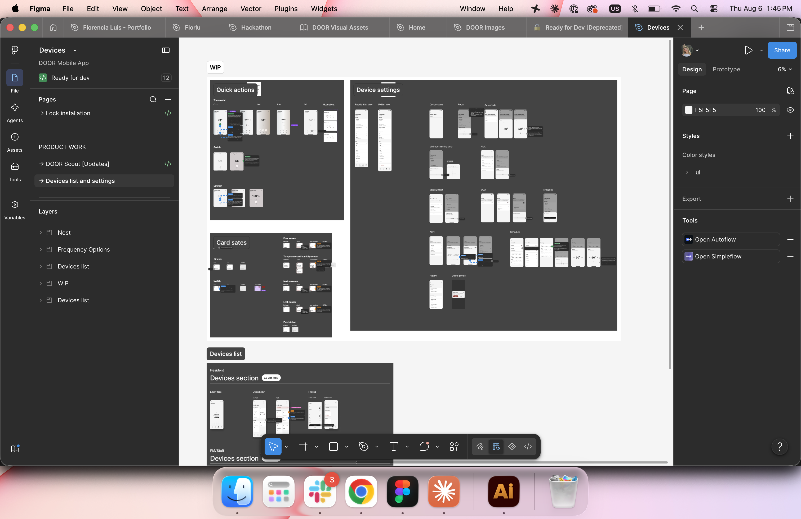

Smart home controls, simplified.Controles de smart home, simplificados.
A redesign of the smart home devices in the DOOR app: quick access, device details and installation, rebuilt so the everyday action is the easy one.Rediseño de los dispositivos de smart home en la app de DOOR: acceso rápido, detalle del dispositivo e instalación, rehechos para que la acción de todos los días sea la fácil.

Everything was on the first screen, so nothing was.Todo estaba en la primera pantalla, así que no estaba nada.
Users were struggling to perform simple actions. The interface was dense: every capability a device had was exposed at first sight, including the ones almost nobody touches from one month to the next.A los usuarios les costaba realizar acciones simples. La interfaz era compleja: todas las capacidades del dispositivo estaban expuestas a primera vista, incluidas las que casi nadie toca de un mes al otro.
Configuration and history sat at the same level as turning something on. The daily action had to compete with settings that belong to setup day.La configuración y el historial estaban al mismo nivel que encender algo. La acción diaria competía con ajustes que pertenecen al día de la instalación.
The UI was simplified, and settings and history moved to a secondary screen.Se simplificó la UI, y settings e history pasaron a una pantalla secundaria.
Functionality first, with every decision traced back to a UX principle.Primero la funcionalidad, con cada decisión apoyada en un principio de UX.
Map the flow before drawing itMapear el flujo antes de dibujarlo
Each release started from the journey: trigger, actions, pain points, opportunities. Support tickets and usage data decided what to fix first.Cada release arrancaba desde el journey: disparador, acciones, pain points, oportunidades. Los tickets de soporte y los datos de uso definían qué resolver primero.
One system, every deviceUn sistema, todos los dispositivos
One sheet, one settings screen and one update screen, built as components that any device in the catalogue fills with its own state and actions.Una hoja, una pantalla de ajustes y una de actualización, hechas como componentes que cualquier dispositivo del catálogo completa con su estado y sus acciones.
Ship in slicesEntregar en partes
Handoff flow by flow in roadmap order, with prototypes for the states that are hard to explain in a spec: out of range, retry, expired permission.Hand-off flujo por flujo en el orden del roadmap, con prototipos para los estados difíciles de explicar en una spec: fuera de rango, reintento, permiso vencido.
Fewer things on screen, in every flow.Menos cosas en pantalla, en cada flujo.
Each device type had grown its own modal, its own settings screen and its own installation copy. The redesign replaced them with one template each, filled by the device — and left only the daily action in first view.Cada tipo de dispositivo había desarrollado su propio modal, su propia pantalla de ajustes y sus propios textos de instalación. El rediseño los reemplazó por una plantilla de cada uno, que se completa según el dispositivo — y dejó en primera vista sólo la acción diaria.
Quick access modalModal de acceso rápido
Tapping a device card opens a sheet to do one thing fast. The old sheet exposed every capability at once, so the one action people came for was the hardest to find.Tocar la tarjeta de un dispositivo abre una hoja para hacer una cosa rápido. La hoja anterior exponía todas las capacidades a la vez, así que la única acción por la que la gente entraba era la más difícil de encontrar.




Device detailsDetalle del dispositivo
Settings and history left the first view and became a screen of their own — the one you open on setup day or when something is wrong, not every day.Settings e history salieron de la primera vista y pasaron a ser una pantalla propia — la que se abre el día de la instalación o cuando algo falla, no todos los días.


Installation flowFlujo de instalación
Updates run while the user waits next to the hardware. The screen has one job: keep them there, and tell them the truth about what is happening.Las actualizaciones corren mientras el usuario espera al lado del hardware. La pantalla tiene un solo trabajo: que se quede ahí, y decirle la verdad sobre lo que está pasando.


And the file it all lives inY el archivo donde vive todo
Handoff only works if engineering can find the screen. The device work was spread across a deprecated file with one page per device type and duplicated frames; it was rebuilt as a single file organised by flow.El handoff sólo funciona si ingeniería encuentra la pantalla. El trabajo de dispositivos estaba repartido en un archivo deprecado con una página por tipo de dispositivo y frames duplicados; se rehízo como un solo archivo organizado por flujo.

